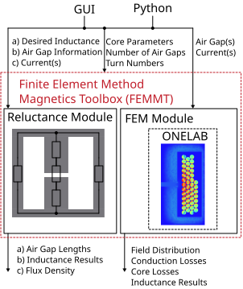
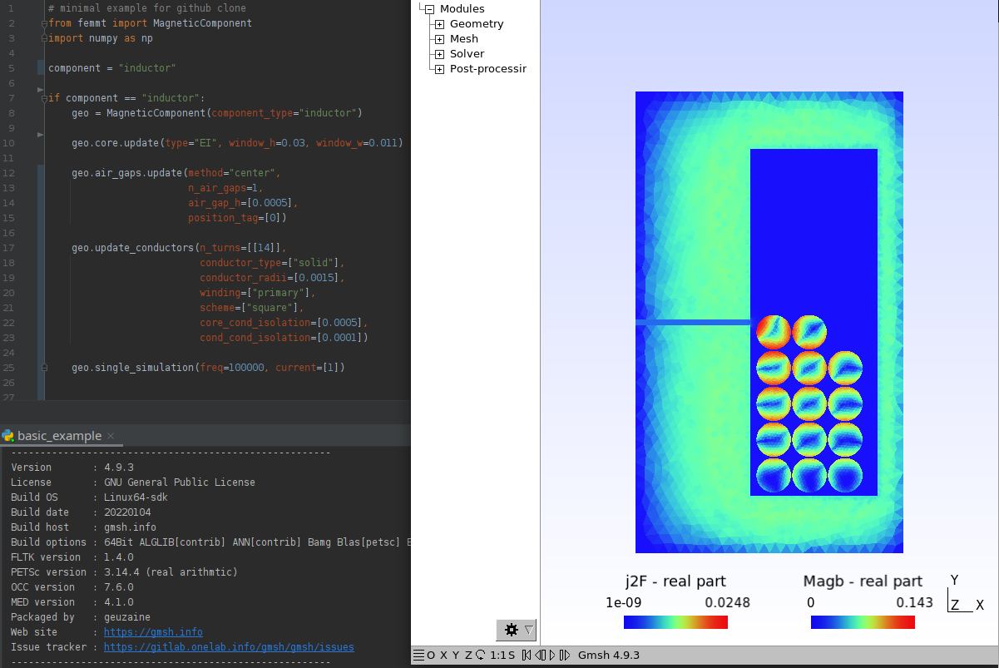

1 Introduction
1.1 FEM Magnetics Toolbox (FEMMT)
Python toolbox to generate preconfigured figures for FEM simulation tools in power electronics.
- The toolbox contains two parts, a reluctance module and a FEM module.
The reluctance module is for pre-calculations
The FEM module is for detailed calculations
The toolbox is accessible via python code or a graphical user interface (GUI), which current development status is experimental.
{kind=link}
- Functionality examples
work with pre-defined standard core structures
work with pre-defined litz wires
use python to perform parametersweeps, e.g. perform several automated simulations of different air gap sizes
read the results automated with python from the FEM simulation tool
Note
- Development status: Alpha
GUI is experimental,
reluctance module is currently working for a single optimization example and not fully implemented yet.
2 Installation
2.1 ONELAB installation
Go to https://onelab.info/
Download the Desktop Version for your OS (Windows, Linux or macOS)
Unpack the software and remember the file path. This will be needed later when installing FEMMT.
2.2 FEMM installation [for Windows User only]
Install FEMM as described
FEMM can be used as an alternative FEM solver for 2D simulations
2.3 Install FEMMT
Chose to install the development version of FEMMT or the release version.
2.3.1 FEMMT release version (recommended)
This is the stable release version. .. code-block:
pip install femmt
2.3.2 FEMMT development version (for developers only)
This is the latest development version with the latest features. Note: You may need to install [git](https://git-scm.com/downloads).
cd /Documents/Folder/of/Interest
git clone git@github.com:upb-lea/FEM_Magnetics_Toolbox.git
pip install -e .
2.4 Minimal example and first run
Run the example from here: [basic_example.py](/femmt/examples/basic_example.py). FEMMT will ask you for the installation path of ONELAB during first use.
3 Examples
This toolbox is able to build a complete FEM simulation from simple Python code. The following figure shows the Python code on the left and the corresponding FEM simulation on the right.
{kind=link}
3.1 Basics
Code examples can be found in this [example file](/femmt/examples/basic_example.py). This file is updated regulary.
- The magnetic component can be an inductor, a transformer, or a transformer with integrated stray path. The parameterization process is divided into the following steps:
Chose simulation type,
set core parameters (geometry, material),
set air gap parameters (position, height),
set conductor parameters (litz/solid wire),
start simulation with given frequencies and currents and phases.
Find an example here, and check out the [example file](/femmt/examples/basic_example.py) for more examples!
import femmt as fmt
# 1. chose simulation type
geo = fmt.MagneticComponent(component_type="inductor")
# 2. set core parameters
geo.core.update(window_h=0.03, window_w=0.011,
mu_rel=3100, phi_mu_deg=12,
sigma=0.6)
# 3. set air gap parameters
geo.air_gaps.update(method="center", n_air_gaps=1, air_gap_h=[0.0005], position_tag=[0])
# 4. set conductor parameters
geo.update_conductors(n_turns=[[14]], conductor_type=["solid"], conductor_radii=[0.0015],
winding=["primary"], scheme=["square"],
core_cond_isolation=[0.001, 0.001, 0.002, 0.001], cond_cond_isolation=[0.0001],
conductivity_sigma=["copper"])
# 5. start simulation with given frequency, currents and phases
geo.create_model(freq=100000)
geo.single_simulation(freq=100000, current=[3])
- The examples contain among other things:
Geometries: Coil, transformer, transformer with integrated stray path,
wire and stranded wire definition,
air gaps definition,
excitation with different frequencies, amplitudes and phases.
- The simulation results can be found in the file /python-side-packages-path/femmt/femmt/results/result_log_electro_magnetic.json. In it you can find
power loss in the core: hysteresis losses and eddy current losses,
losses per winding and for each individual winding,
self- and mutual inductances.
3.2 GUI
- There is a first preview for a GUI. Installing this is a bit cumbersome at first, but will be simplified in the future:
Download the complete repository via Code -> Download ZIP and unpack it.
install the development version of femmt as described above
run python downloads/path-to_femmt/femmt/gui/femmt_gui.py
{kind=link}
4 Others
4.1 Roadmap
- Planned features in 2022:
Software stability and general improvements,
add more Functionality to the GUI,
implement basics for thermal simulation in python code.
4.2 Bug Reports
Please use the issues report button within github to report bugs.
4.3 Contributing
Pull requests are welcome. For major changes, please open an issue first to discuss what you would like to change. For contributing, please refer to this [section](Contributing.md).
4.4 Changelog
Find the changelog here.
4.5 License
Licensed under GPLv3.
4.6 History and project status
This project was initially written in matlab using FEMM simulation tool. It became clear that the project was no longer a small project. The project should be completely rewritten, because many new complex levels have been added. To place the project in the open source world, the programming language python is used.